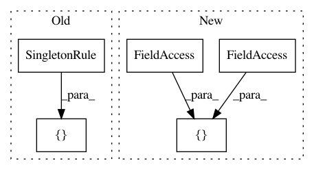

2e14cb2c52b28f9392c90497f4ccb58facfeb95d,src/python/pants/init/engine_initializer.py,EngineInitializer,setup_legacy_graph_extended,#Any#Any#Any#Any#Any#Any#Any#Any#Any#Any#Any#Any#Any#Any#,275
Before Change
// Create a Scheduler containing graph and filesystem rules, with no installed goals. The
// LegacyBuildGraph will explicitly request the products it needs.
rules = (
[
RootRule(Console),
SingletonRule.from_instance(glob_match_error_behavior or GlobMatchErrorBehavior.ignore),
SingletonRule.from_instance(build_configuration),
SingletonRule(SymbolTable, symbol_table),
] +
create_legacy_graph_tasks() +
create_fs_rules() +
create_process_rules() +
After Change
// Create a Scheduler containing graph and filesystem rules, with no installed goals. The
// LegacyBuildGraph will explicitly request the products it needs.
rules = (
[
RootRule(Console),
glob_match_error_behavior_singleton,
build_configuration_singleton,
symbol_table_singleton,
] +
create_legacy_graph_tasks() +
create_fs_rules() +
create_process_rules() +
In pattern: SUPERPATTERN
Frequency: 3
Non-data size: 5
Instances
Project Name: pantsbuild/pants
Commit Name: 2e14cb2c52b28f9392c90497f4ccb58facfeb95d
Time: 2019-04-02
Author: stuhood@twitter.com
File Name: src/python/pants/init/engine_initializer.py
Class Name: EngineInitializer
Method Name: setup_legacy_graph_extended
Project Name: pantsbuild/pants
Commit Name: edd039bf98702f3eb01a7cd4e25559247e686a72
Time: 2017-06-16
Author: stuhood@twitter.com
File Name: src/python/pants/engine/build_files.py
Class Name:
Method Name: create_graph_rules
Project Name: pantsbuild/pants
Commit Name: 3f49af5b9e213b2de03060bc02d6d81128cb5dec
Time: 2018-04-18
Author: 1305167+cosmicexplorer@users.noreply.github.com
File Name: tests/python/pants_test/engine/test_isolated_process.py
Class Name: IsolatedProcessTest
Method Name: test_javac_version_example